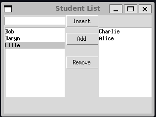
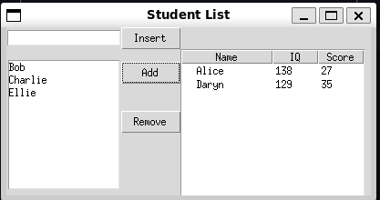

---
title: "The Adaptor Pattern (Object-Adaptor)"
---
classDiagram
class Client
class Target {
<<Interface>>
+Operation()
}
class Adapter {
+Operation()
}
class Adaptee {
+OtherOperation()
}
Adapter --> Adaptee : Adapts
Adapter ..|> Target
Client --> Target : Uses
Chapter 12: The Adaptor Pattern
Notes
- The Adaptor Pattern converts the interface of one class to another
- There are two styles of adaptors
- Object adaptors
- The adapting class contains an instance of the adapted object and delegates to this instance
- Class adaptors
- The client uses multiple inheritance or interfaces to implement both the expected and pre-existing implementation
- Object adaptors
Moving Data Between Lists
- Consider a simple case of a program that consists of a list of student names
- A client can enter new names into the list
- The user can then select a subset of the student names to be copied into another list
- Names are added at the top via an
Insertbutton- Moved between the two lists via an
AddandRemovelist
- Moved between the two lists via an
- This initial implementation is straightforward and can be found in student_list.py
We simply moving data between the two listboxes with a class
class DerivedListbox(tk.Listbox): def __init__(self, root) -> None: super().__init__(root) def selected(self): selection = self.curselection() selected_index = selection[0] return self.get(selected_index) def delete_selected(self) -> None: selection = self.curselection() selected_index = selection[0] self.delete(selected_index) def append(self, text: str) -> None: self.insert(tk.END, text)We then implement our UI with a standard builder class and method
class UIBuilder: def __init__(self, root): self.root = root def build(self): self.root.geometry("300x200") self.root.title("Student List") self.entry = tk.Entry(self.root) self.entry.grid(row=0, column=0) self.left_list = DerivedListbox(self.root) self.left_list.grid(row=1, column=0, rowspan=4) self.right_list = DerivedListbox(self.root) self.right_list.grid(row=1, column=2, rowspan=4) def enter_name(): text = self.entry.get() self.left_list.append(text) self.entry.delete(0, tk.END) entry_button = tk.ttk.Button(self.root, text="Insert", command=enter_name) entry_button.grid(row=0, column=1, sticky=tk.W) def move_selection(source: DerivedListbox, destination: DerivedListbox): selected = source.selected() destination.append(selected) source.delete_selected() add_button = tk.ttk.Button( self.root, text="Add", command=lambda: move_selection(self.left_list, self.right_list), ) add_button.grid(row=1, column=1) remove_button = tk.ttk.Button( self.root, text="Remove", command=lambda: move_selection(self.right_list, self.left_list), ) remove_button.grid(row=2, column=1)The resulting program should look like,

A simple program consisting of two lists that data can be moved between
Making an Adaptor
- Consider now that we want the right-side to display data differently
- For example a table of IQ and test scores
- We want to be able to keep using the
UIBuilderclass- But we don’t want to have to change the interface to the listboxes
- We want to create an adaptor that can convert the data for a
Treeviewwidget to our listboxThe adaptor here accepts an existing tree widget and adapts the method implementations as required
selected- This is updated to a straightforward retrieval on the tree
delete_selected- This is updated to a straightforward delete on the tree
append- This is the most complicated
- The insert itself is simple
- However we need to provide values for
IQandScore- In this case we use a simple random number generation
- In a more realistic example this might trigger a database look-up on the provided name
class ListboxAdaptor(DerivedListbox): def __init__(self, root, tree): super().__init__(root) self.tree = tree self.idx = 1 @override def selected(self): tree_row = self.tree.focus() row = self.tree.item(tree_row) return row.get("text") @override def delete_selected(self) -> None: tree_row = self.tree.focus() self.tree.delete(tree_row) @override def append(self, text: str) -> None: def random_iq(): return random.randint(a=115, b=145) def random_score(): return random.randint(a=25, b=35) self.tree.insert("", self.idx, text=text, values=(random_iq(), random_score()))- Now we need to update our
UIBuilderto create the tree, thebuildmethod is modified accordingly
self.tree = tk.ttk.Treeview(self.root) self.tree["columns"] = ("IQ", "Score") self.tree.column(column="#0", width=100, minwidth=100, stretch=tk.NO) self.tree.column(column="IQ", width=50, minwidth=50, stretch=tk.NO) self.tree.column(column="Score", width=50, minwidth=50, stretch=tk.NO) self.tree.heading(column="#0", text="Name") self.tree.heading(column="IQ", text="IQ") self.tree.heading(column="Score", text="Score") self.right_list = ListboxAdaptor(self.root, self.tree) self.tree.grid(row=1, column=2, rowspan=4)- As you can see from above once we’ve created the tree we simply replace the
self.right_listassignment withListboxAdaptorinstead ofDerivedListbox- We also need to put
treeonto the grid rather thanright_listitself
- We also need to put
- Observe that we don’t need to then rewire any of the code that depends on
right_list- This is because it still obeys the same interface as before, and is for all intents and purposes the same object to the others
- The full code can be seen in student_table.py
The program should look like below

The updated Student List with a listbox and an adapted table
The Class Adapter
- The above is an example of an object adaptor because it wraps an instance of the object being adapted
- Here the
Treelist
- Here the
- A class adaptor would instead derive a new class that provides the additional methods of the interface being targeted
Beyond Basic Adapters
Two-Way Adapters
- Two way adapters are a special technique that allow adapters to be viewed as either side of the adaptee vs target
- Typically implemented via a class adapter since the base class methods are automatically inherited
- However, this works only if base class methods are not overridden to provide different behaviours
Pluggable Adapters
- A pluggable adapter adapts dynamically to one of several classes
- The adapter can only adapt to classes it recognises
- Usually the adapter is configured by the differing constructors
- Or in python
classmethodor attributes
- Or in python
Summary
A class adapter
- Doesn’t work when adapting a class and all it’s subclasses since it fixed to derive from a specified subclass
- The adapter can change some of the adapted class methods
- Others can be used unchanged
An object adapter
- Subclasses can be adapted by passing them into the constructor
- Requires explicitly provided forwarded method signatures for any methods on the wrapped subclass you wish to make part of the adapter’s interface